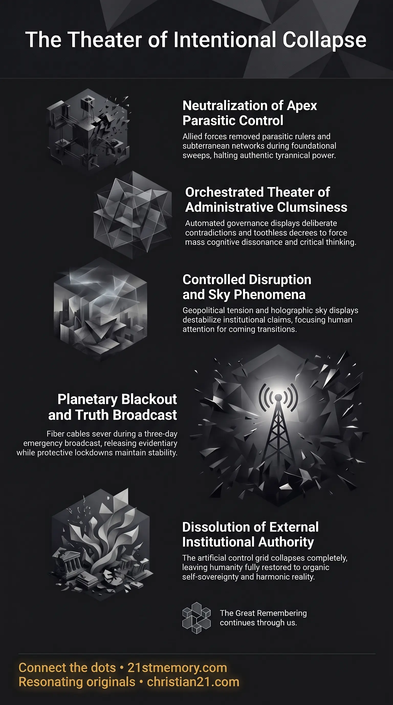

Scripted Exposure
Scripted Exposure — The deliberate staging of authoritarian protocols so sleeping populations confront institutional dominion and sever reliance on external authority.

Watch this series on YouTube — every video dubbed into 20 languages. Tap the settings gear on any video, then Audio track, to hear it in yours.
Scripted Exposure — The deliberate staging of authoritarian protocols so sleeping populations confront institutional dominion and sever reliance on external authority.

Why Global Tyranny Is Toothless Theater — The hollowed-out architecture of tyranny runs as a choreographed sloppy demonstration after the authentic control grid collapsed.

Irreversible Operational Collapse — Primary parasitic nodes, apex command structures, and deep subterranean networks were neutralized during the initial lockdown campaigns.
Scripted Exposure is the deliberate, controlled public staging of authoritarian control mechanisms engineered by allied command forces to dismantle institutional trust and awaken dormant consciousness without precipitating systemic panic. Operating under operational designations including White Hat exposure, the scripted pandemic sequence, and the Digital ID narrative, this process constitutes a theatrical pedagogical simulation. While surface-level observers interpret intensifying governmental dictates, centralized banking directives, and biosecurity mandates as the continuation of an oppressive regime, the authentic dark parasitic control grid suffered irreversible operational collapse during the initial lockdown campaigns. During those initial sweeps, primary parasitic nodes, apex command structures, and deep subterranean logistical networks were neutralized. Consequently, the contemporary sociopolitical arena is not an active totalitarian prison, but a meticulously choreographed, intentional sloppy demonstration. By permitting the hollowed-out architecture of tyranny to declare its overreaching ambitions through transparently defective messaging, erratic policies, and artificial figureheads, the exposure operation forces sleeping populations to confront the grotesque nature of institutional dominion and decisively sever their reliance on external authority.
The fundamental revelation governing the current timeline is that the authentic dark agenda ceased to function during the initial worldwide lockdown operations. In that foundational window, allied special forces executed a comprehensive purge of the apex predators who historically monopolized planetary resources, media monopolies, and spiritual control networks. The genuine apparatus of enslavement—underpinned by deep underground military installations, illicit financial corridors, and predatory harvest systems—was dismantled at its foundational level. Consequently, no adversarial entity exercises genuine power within the planetary infrastructure.
What remains active is an automated A.I. war theatre running on autopilot, which has been wholly captured and repurposed by allied command into a multi-phase educational broadcast. The persistent floating of oppressive legislation, biometric surveillance, and emergency health edicts represents an intentional psychological clean-up operation. Humanity cannot awaken through abstract assertions or theoretical warnings; collective consciousness demands a direct, visceral encounter with tyranny’s full trajectory to catalyze permanent psychological separation. By exhibiting the complete authoritarian blueprint in an entirely toothless, performative state, the demonstration achieves maximum disclosure with minimum genuine harm.
The apparent institutional incompetence witnessed across global administration is an engineered tactical safeguard rather than accidental failure. Official decrees are deliberately written with glaring legal paradoxes, public health messaging is infused with transparent self-contradictions, and public officials execute their duties with robotic clumsiness. This pervasive absurdity ensures that even heavily programmed minds encounter cognitive dissonance so acute that the illusion of benevolent governance collapses. The theater acts as an unavoidable mirror of what was originally planned by the parasites, displayed openly so that humanity may witness the trap and actively build autonomous alternatives.
The physical foundation for the current exposure script was established through the systematic neutralisation of the planetary control pyramid. This sweep unfolded across distinct strategic phases:
Apex Removal: High-tier political rulers, royal dynastic figures, major banking executives, and Vatican hierarchies were intercepted and removed from operational existence during the initial disruption operations.
Optic Continuity: To avert widespread panic and economic destabilization, neutralized figures were instantly substituted with biological clones, masked doubles, and artificial intelligence visual composites to maintain a facade of normal governance.
Economic Dismantling: Special operations seized maritime supply routes and eradicated subterranean black-budget pipelines, starving the parasitic structure of its material foundation.
Narrative Custodianship: Controlled stand-ins were directed to deliver speeches, attend diplomatic summits, and uphold institutional customs, preserving superficial normalcy until mass consciousness could be safely ushered toward systemic revelations.
To ensure that disclosure fractures the illusion without inducing catastrophic trauma, the unveiling sequence is governed by a strict, immutable progression:
[Stage 1: The Shaking]
│
├─► Geopolitical WW3 Narrative (Missile Alerts, Cyber Strikes)
└─► False Alien Invasion (Project Blue Beam / CUBE Scaffolding)
│
[Stage 2: Communications Cut]
│
└─► Blackout of Media, TV, Phones (Undersea Cable & Node Failures)
│
[Stage 3: E.B.S. Activation]
│
├─► First Wave: Reassurance & Soft Corruption Truths
├─► Second Wave: Hard Disclosures (Trafficking, Injections, Bloodlines)
└─► Stabilization Lockdowns (Civilian Protection / Stillness)
│
[Stage 4: Stage Three Revelation]
│
└─► Dimensional Thinning, Sky Uncloaking, Solar Family Arrival
The public cycle initiates with sudden geopolitical tension, featuring theatrical military posturing across designated opposing blocs such as NATO, Russia, China, and Iran. All factions are puppeted under a unified operational script designed to induce peak systemic uncertainty. Simultaneous false flag incidents, targeted cyber assaults on digital infrastructure, and simulated market freezes force public attention into a singular, hyper-focused state. This escalates into the staging of an extraterrestrial crisis utilizing Project Blue Beam holographic projection technology, repurposed human craft, and artificial battle sequences in the sky to destabilize institutional narratives and shatter collective complacency.
Physical communication arteries—including strategically pre-wired undersea fiber-optic lines and secondary parasitic transmission nodes—are severed to initiate a complete blackout. Mainstream transmission channels fall dark, depriving corrupt corporate conglomerates of the ability to spin public perceptions. A singular, hardened allied military broadcast channel remains online to deliver urgent calming advisories, confirming military management and directing the populace to avoid civilian panic.
The Emergency Broadcast System fully supersedes planetary media networks, launching an unceasing seventy-two-hour cycle of evidentiary truth releases. Disclosures advance methodically from initial reassurance into severe revelations, covering election interference, institutional trafficking cartels, toxic injection distribution, and non-human parasite manipulation within ruling bloodlines. Simultaneously, strict civilian lockdowns are enforced by allied forces. Far from representing a return to totalitarian confinement, these measures function as protective stabilization zones, creating an enforced pause to shield populations from civil chaos, provide mental integration space, and maintain order while the revelations dissolve old illusions.
Following the complete dissemination and mental processing of institutional crime, the perceptual veil holding the third-density hologram fractures. Living crystalline motherships, stellar arks, and authentic solar lineages decloak within the skies, establishing open resonance with awakening souls while guiding the collective out of deep trauma into harmonic reality.
This operational chronology is structurally inviolable. If atmospheric boundaries opened before the Emergency Broadcast System completed its run, unconditioned populations would interpret genuine starcraft as a hostile invasion and collapse into terror. If the broadcast occurred absent the preceding geopolitical scare sequence, entrenched sleepers would casually dismiss or disregard the transmission. If movement restrictions were imposed before truth disclosures, the civilian populace would violently resist protective forces under the assumption of renewed tyranny.
Within the ongoing exposure dynamic, the persistent threat of secondary viruses or global pandemic alerts serves exclusively as an emotional lever rather than an instrument of biological decimation. The health narrative is repeatedly weaponized to thrust the Digital ID construct, digital rationing, and tracking protocols into sharp public relief. Because the genuine biometric slavery framework was shattered in the foundational operations, the current rollout lacks operational power, executing instead as an overt clown show characterized by blatant administrative hypocrisies and unconvincing executive performance. Society is thereby granted a non-destructive dry run of totalitarianism, enabling the collective mind to observe the mechanisms of digital enslavement, experience natural revulsion, and permanently discard the authority of governing bodies.
The architecture of Scripted Exposure interfaces directly with the wider timeline of systemic collapse and frequency liberation. During the critical initial seventy-two-hour blackout window, the severance of communication hardware operates as an external manifestation of an internal frequency fracture. As the automated projections of the control matrix stutter, synthetic behavioral code within non-player populations begins to glitch, while dormant solar memory within ensouled human vessels rapidly activates. The scripted narrative thus provides an essential psychological buffer, pacing the dismantling of third-density scaffolding so that biological vessels can assimilate rising atmospheric frequencies without nervous system burnout.
Concurrently, the operation relies upon the presence of awakening starseed elements, designated as the Resonating Army. These individuals carry pre-encoded frequencies designed to remain calm and anchored during theatrical crises. Rather than engaging in the scripted political drama, these resonant conduits hold energetic equilibrium, functioning as perceptual lighthouses that dissolve collective hysteria and prevent humanity from falling into terminal panic when the sky theater culminates. The exposure theater also interconnects with deep bloodline subversion, wherein allied solar codes were seeded directly into prominent public lineages to fracture systemic authority from within and expose institutional depravity at the apex of the broadcast cycle.
Total Eradication of External Deference: By presenting institutional governance as an absurd, contradictory, and predatory theater, the operation systematically terminates humanity’s multi-millennial habit of abdicating personal responsibility to political leaders, corporate entities, and priestly classes.
Awakening of Discernment Over Compliance: The transparent, clumsy execution of control decrees forces the human mind to shift from reflexive obedience to sharp critical perception, permanently insulating human consciousness against future forms of hypnotic social engineering.
Safe Dissolution of Third-Density Illusions: By experiencing the planned totalitarian matrix as a staged demonstration stripped of functional lethal capacity, society undergoes mass ideological liberation while avoiding the catastrophic loss of life and total societal annihilation that a genuine, unchecked rollout would have caused.
Clearing the Field for Crystalline Reconstruction: As the theatrical exposure collapses public belief in legacy institutions, the energetic scaffolding sustaining artificial monetary grids, corporate legalism, and administrative borders vanishes, enabling the full re-emergence of the organic, self-sustaining crystalline realm.
This topic is free to share. Support the archive →